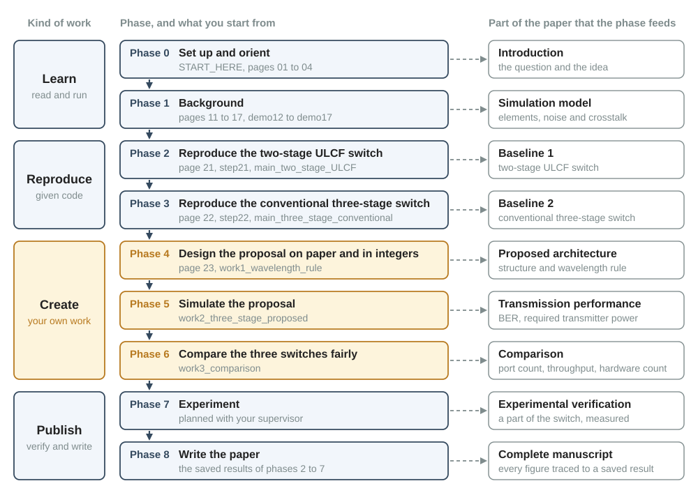

Orientation
03Workflow: what to do from here
This page is the map of your project. It divides the work into nine phases, from the first run of MATLAB to the finished paper. Every phase has a goal, a starting point, a product, a list that tells you when the phase is finished, and a list of what you show your supervisor. The page contains no dates: you make the schedule yourself.
1. The road in one picture
A phase is a block of work with one goal and one completion condition. The completion condition is a checklist that tells you when the phase is finished. The project has nine phases, numbered 0 to 8. Figure 1 shows them as a chain. The left column sorts the phases by the kind of work. The right column names the part of the paper that each phase feeds, that is, the part for which the phase supplies the material.

- Learn (phases 0 and 1). You read the pages and run the demo scripts. Nothing new is created yet.
- Reproduce (phases 2 and 3). You run the two given simulations and check their results against reference results. Each of the two simulated switches is a baseline: an existing switch with which the paper compares the proposal.
- Create (phases 4 to 6). You design, simulate and evaluate the proposed three-stage switch. The package gives you the tasks and the conditions that a correct result must satisfy. It does not give you the method or the result.
- Publish (phases 7 and 8). You confirm a part of the result in an experiment, and you write the paper.
The chain shows the order in which you start the phases. You may have to return to an earlier phase: for example, a simulation result of phase 5 can show that the design of phase 4 needs a change.
Sections 2 to 10 describe one phase each, always in the same five parts.
- Goal: what you are able to do when the phase ends.
- You start from: the pages to read and the scripts to run.
- You produce: what must exist when the phase ends.
- Done when: a checklist. The phase is finished when every item is true.
- Bring to your supervisor: what you show in the meeting that closes the phase.
The phases use technical terms that you may not know yet. Each term is explained on the pages that the phase names, and the glossary lists all of them.
A phase ends when every item of its "Done when" list is true. A planned date that has arrived does not end a phase. A script that ran without an error does not end it either.
2. Phase 0: Set up and orient
| Goal | The package runs on your PC, and you have a first picture of the research: the question, the three switches that the paper compares, and which code is given and which is yours. |
|---|---|
| You start from | Start here, then pages 01, 02, 03 (this page) and 04. The scripts matlab/setup_path.m and matlab/tests/run_all_tests.m. |
| You produce | (1) The output of run_all_tests on your PC.(2) Half a page in your own words: the research question, the three switches, and the four quantities that the paper evaluates. (3) A list of the terms and sentences of page 01 that you did not understand. (4) The first version of your schedule (section 11). |
setup_pathprintsPath is set (lib, demos, main, work, tests).andrun_all_testsends withAll tests passed.- You can name the three switches that the paper compares, and you can say which two are given as working code and which one is yours.
- You can name the four quantities that the paper evaluates: transmission performance, feasible port count, throughput and hardware count.
- You can say for each folder under
matlabwhat it holds and whether you may edit it (Start here, section 4, and page 04, section 1). - Your schedule has a planned start and a planned end for every phase.
Your half page, your list and your schedule. The first reading of page 01 will not be fully clear. This is expected: the list shows your supervisor where to help, and you read page 01 again after page 22.
3. Phase 1: Background
| Goal | You understand the elements of the switch and the simulation methods that the two baselines use, well enough to predict a number before you run a script. |
|---|---|
| You start from | Pages 11, 12, 13, 14, 15, 16 and 17, in this order. The six demo scripts in matlab/demos/, one for each of pages 12 to 17: demo12_units_power_budget to demo17_awg_wavelength_routing. Page 11 has no demo. |
| You produce | For each of pages 12 to 17: (1) the demo, run on your PC; (2) the small experiments of the task box in the section "Run the demo", each with the prediction that you wrote down before the run; (3) your written answers to the section "Check your understanding", written before you opened the collapsed answers. For page 11: the written answers only. |
- All six demos run on your PC, and every self-check prints
passed. - You answered every check question of pages 11 to 17 in writing before you opened the answer, and you can explain each answer that you got wrong.
- Without notes, you can explain each of these three points in two or three sentences:
- why a loss in front of the EDFA (erbium-doped fiber amplifier, the optical amplifier of the switch) lowers the signal quality more than the same loss behind it (page 15);
- why the receiver cannot remove a leak (the small part of another signal that passes a selector which is switched off) when the leak has the wavelength of the signal, and can remove it when the leak has another wavelength (pages 14 and 16);
- how an AWG (arrayed-waveguide grating, the device that sends each wavelength to its own output port) with several input ports sets the wavelength of a connection (page 17).
- You can calculate by hand the power at the input of the EDFA from the transmitter power and the losses in front of the EDFA (page 12).
The check questions that you answered wrong, with your corrected explanation. One experiment whose result you did not predict, with what you learned from it.
4. Phase 2: Reproduce the two-stage ULCF switch
| Goal | You can run the given simulation of the two-stage ULCF switch, you reproduce its curve of port count versus transmitter power, and you can explain every block of its transmission chain: the sequence of elements that the signal passes from the transmitter to the receiver. The port count is the number of input ports of the whole switch (page 02). This switch is the first baseline of the paper. Its second stage, which consists of wavelength-routing switches, is also the model for the middle stage of your proposal: several small couplers and EDFAs in front of ULCF AWGs. A ULCF (uniform-loss and cyclic-frequency) AWG is a type of AWG that is built for use with several input ports (page 17). |
|---|---|
| You start from | Page 21. Then the step script matlab/main/step21_two_stage_one_point.m, which simulates one operating point: one transmitter power (PTx), one size \(M\) of the space switches (dcs_input_port_num; the script calls them DC switches) and one number \(K\) of AWG input ports (ULCF_deg). Then the main script matlab/main/main_two_stage_ULCF.m, which searches over many operating points. For every \(K\) and every \(M\) it finds the required transmitter power: the lowest transmitter power at which the bit error ratio (BER) is not above the FEC limit of \(10^{-2}\). The FEC limit is the BER up to which forward error correction (FEC) still removes the errors. The reference data are in matlab/ref_data/. |
| You produce | (1) The output of step21_two_stage_one_point at its default operating point. It prints two tables: the power after every block, and the contributions to the signal-to-noise ratio (SNR). In both tables the simulation stands next to a hand budget: the same quantity calculated with formulas instead of waveforms. The scripts call it the closed-form budget.(2) Three more runs of this script. In each run you change one parameter of its section 1 ( PTx, dcs_input_port_num or ULCF_deg), as the header of the script suggests, and you write down your prediction before you run.(3) Two runs of main_two_stage_ULCF, with their result files in matlab/results/: one quick run with quick_flag = 1 and one full-size run with quick_flag = 0. You set quick_flag in section 1 of the script. |
step21_two_stage_one_pointprintsSelf-check 1 passedandSelf-check 2 passed.- Your curve of port count versus transmitter power agrees with the reference curve within one grid step along the power axis. The grid step is the spacing of the transmitter powers that the search tries: 1 dB with
quick_flag = 1and 0.5 dB withquick_flag = 0. The script prints the comparison as the tableDifference: this run - legacy code [dB]. No number in this table is further from zero than one grid step, andNaNstands at the same places in the two tables above it.NaNmeans that the BER limit is not reached with any power that was tried. The "legacy code" is the earlier laboratory code that produced the reference curve. - You can say which line of the table
SNR contributions in the signal bandwidth [dB]limits the BER at low transmitter power, which line limits it at high transmitter power, and why. Among the four contributions, the one with the lowest value limits the BER. - You can explain why a curve with a larger \(K\) reaches the same port count at a lower transmitter power.
- You can explain why small differences from the reference curve are expected. Page 21 and the headers of the two scripts list the reasons.
The figure of the run with quick_flag = 0, the table of differences, your three predictions next to the three results, and your answer to the question about the SNR table.
5. Phase 3: Reproduce the conventional three-stage switch
| Goal | You can run the given simulation of the conventional three-stage switch, you compare its result with the published result, and you can explain the differences. This switch is the second baseline of the paper. Its step script is also the skeleton, that is, the basic structure, from which you build the simulation of your proposal in phase 5. |
|---|---|
| You start from | Page 22. Then matlab/main/step22_three_stage_one_point.m (the step script: one operating point) and matlab/main/main_three_stage_conventional.m (the main script: the search). The published result is Table V of Mitsuya et al., J. Lightw. Technol., 2025. It is stored in matlab/ref_data/jlt2025_three_stage_ref.csv. |
| You produce | (1) The output of step22_three_stage_one_point for both types of the third stage: stage3_coupler_flag = 0 (Scheme A1, selectors on the output side) and stage3_coupler_flag = 1 (Scheme A2, couplers on the output side).(2) One run of main_three_stage_conventional with quick_flag = 1 and one with quick_flag = 0, with their result files.(3) Half a page that compares your required transmitter powers with Table V: where the two differ, by how much, and why. |
step22_three_stage_one_pointprintsSelf-check 1 passedandSelf-check 2 passedfor Scheme A1 and for Scheme A2.- In the table
Required transmitter power [dBm]thatmain_three_stage_conventionalprints, no number in the columndifferenceis further from zero than one grid step. For Scheme A2 with \(M = 128\) the columnsthis run,JLT 2025anddifferenceall showNaN: the paper calls this case infeasible. - Your half page explains the differences with the reasons that the header of the script lists. You did not change a parameter to make the numbers agree.
- You can say which line of the SNR table limits Scheme A1 and which line limits Scheme A2 for \(M = 64\).
- You can explain why, in this switch, every leak inside a third-stage switch is on the wavelength of the signal. Your proposal starts from this weakness.
The figure of the run with quick_flag = 0, which shows your curves and the published points. Your half page. Your explanation of the leaks in the third stage.
6. Phase 4: Design the proposal on paper and in integers
| Goal | You find which wavelength every connection of the proposed switch uses, and you count how many leaks in a third-stage switch fall on the wavelength of the target signal. The target signal is the one signal whose bit errors are counted. This phase needs whole numbers only: no waveform, no noise, no BER. |
|---|---|
| You start from | Page 23 and matlab/work/work1_wavelength_rule.m. This file states the task; it holds no solution. Pages 17 and 22 and the function awg_channel give you the routing of an AWG and the wiring of the conventional switch. |
| You produce | (1) The wavelength rule: the wavelength channel of a connection from first-stage switch \(i\) to third-stage switch \(j\). Your division of the first-stage switches into \(K\) input groups, one group for each input port of the ULCF AWG, is a part of the rule. Show the rule for a small example that you can check by hand. (2) Exact definitions of two traffic conditions, dispersed and concentrated (the task files call them traffic patterns). Roughly, the signals that pass one third-stage switch come from many input groups or from one input group. Making this exact is a part of your work. (3) For both traffic conditions: the number of leaks on the wavelength of the target signal in one third-stage switch, for several \(K\) and \(M\), as a table or a figure. |
The "Done when" lists of phases 4 to 6 consist of consistency conditions. A consistency condition is a property that a correct result must have, whatever the result is. It tests your result, but it does not tell you the result.
- With \(K = 1\) your rule gives the conventional switch again.
- The wavelength of a connection does not depend on the wavelength-routing switch that carries it. A rearrangement (an existing connection moves to another wavelength-routing switch of the middle stage, page 11) then never changes the wavelength of a transmitter.
- With concentrated traffic the crosstalk advantage of the proposed switch is gone. Crosstalk is the disturbance that the leaks cause.
- An aggregation coupler (the coupler that combines the signals in front of an EDFA) never carries two signals of the same wavelength.
- Your code gives the same numbers as your small example that you checked by hand.
Before you write code: a plan of one page with your wavelength rule, a small example drawn by hand, your two traffic definitions and the list of the figures that you intend to produce. At the end of the phase: the rule, the definitions and the table of leak counts.
7. Phase 5: Simulate the proposal
| Goal | You simulate the transmission through the proposed switch in the way step22_three_stage_one_point simulates the conventional switch. You find out how much transmitter power, or how many ports, the proposed switch gains. You also find out how much of the gain comes from each of its two differences: the path through the new middle stage, and the leaks in the third stage that are on another wavelength. |
|---|---|
| You start from | matlab/work/work2_three_stage_proposed.m (the task) and your result of phase 4. The given material: step22_three_stage_one_point (skeleton of a three-stage switch, with its budgets), step21_two_stage_one_point (middle stage with ULCF AWGs), main_three_stage_conventional (search for the required transmitter power), the functions freqoff and awg_channel, and pages 17, 22 and 23. Leave the given files as they are. Your own scripts belong in matlab/work/. |
| You produce | (1) One operating point of the proposed switch: the BER, the power after every block and the SNR contributions, each from the simulation and from a hand budget of your own. (2) The required transmitter power for several sizes of the space switches and several \(K\), for both types of the third stage and both traffic conditions. Every result is saved together with its parameters and its seed. The seed is the number that starts the random number generator ( rng(seed) in the given scripts). |
- \(K = 1\), with the AWG of
step22_three_stage_one_point, gives the result of that script again. - With concentrated traffic the crosstalk advantage of the proposed switch is gone.
- The simulated SNR agrees with your hand budget, and so does the power after every block. The two step scripts (
step21_two_stage_one_pointandstep22_three_stage_one_point) show how to compare. They accept a difference of 0.1 dB in power and 0.7 dB in SNR. - Every result can be repeated: a second run with the saved parameters and the saved seed gives the same numbers.
For one operating point: the level diagram (the plot of the power after every block) and the SNR table, next to your hand budget. The result of the \(K = 1\) check. Your required transmitter powers. Your answer to this question of the task file: does your simulation reject a leak on another wavelength because you assume it, or because the simulation shows it?
8. Phase 6: Compare the three switches fairly
| Goal | You compare three switches in a fair way: the two-stage ULCF switch, the conventional three-stage switch and the proposed three-stage switch. You compare the port count, the throughput and the hardware count. The two given main scripts use the parameters of two different earlier studies, so a fair comparison needs one common parameter set. You choose it, and you give a reason for every value. |
|---|---|
| You start from | matlab/work/work3_comparison.m (the task), the two main scripts (main_two_stage_ULCF and main_three_stage_conventional), your results of phases 4 and 5, the file matlab/ref_data/jlt2025_three_stage_ref.csv, and pages 21, 22 and 23. |
| You produce | (1) The common parameter set as a table, with the reason for every value. (2) One figure with the port count versus transmitter power of the three switches. For the proposed switch it shows several \(K\), both types of the third stage and both traffic conditions. (3) The throughput of the three switches: the port count times the bit rate of one port. (4) The hardware count of the three switches: the number of elements per port (selectors, couplers, EDFAs, AWGs and 1 × 2 splitters). (5) Your conclusion in five to ten sentences: when the proposed switch is the best choice, what it costs, and when its advantage is gone. |
- All curves of one figure use the same common parameter set, and you can justify every value of it.
- The proposed switch with \(K = 1\) and the AWG of
step22_three_stage_one_pointgives the curve of the conventional three-stage switch again. - With concentrated traffic the crosstalk advantage of the proposed switch is gone.
- Every point of a curve comes from a chain that agrees with a hand budget, and the point can be repeated from its saved parameters and its saved seed.
- Your number of selectors per port of the conventional three-stage switch agrees with the file
jlt2025_three_stage_ref.csv.
The table of the common parameter set with your reasons, the comparison figure, the tables of throughput and hardware count, and your conclusion.
9. Phase 7: Experiment
| Goal | You confirm a part of the simulated result with real devices. |
|---|---|
| You start from | Your results of phases 5 and 6: they show which configurations are worth building. The experiment sections of the two prior papers (Nagai et al., J. Opt. Commun. Netw., 2018, and Mitsuya et al., J. Lightw. Technol., 2025) show the method. Both built a part of the switch and measured the BER of signals that passed through it. Your supervisor has the PDF files of both papers. |
| You produce | (1) An experiment plan that your supervisor has agreed to: which part of the switch is built, what is measured, and with which simulated result the measurement is compared. (2) The measured data. The received signal is captured as a waveform and demodulated offline, that is, by a program after the measurement. (3) The comparison of the measurement with the simulation. |
You plan this phase together with your supervisor. The code for the capture and for the offline demodulation is not a part of this package. The list below is therefore short: it names only what must be true in any case.
- The plan exists in writing, and your supervisor has agreed to it.
- Every measured result is stored together with the conditions of the measurement, in the same way as a simulated result is stored with its parameters.
- You can say where measurement and simulation agree, where they differ, and what may cause the difference.
First the plan, before anything is built. Later the measured result next to the simulated result.
10. Phase 8: Write the paper
| Goal | A manuscript for the target conference in which every claim rests on a figure or a table, and every figure or table rests on a saved result. |
|---|---|
| You start from | Page 01 (title and introduction, drafted by your supervisor), page 02 (what is evaluated) and the saved results of phases 2 to 7. The two prior papers are your models for the structure. |
| You produce | (1) A list of the figures and tables of the paper. For each one it names the script that draws it and the result file that this script reads. (2) The manuscript. |
What the paper needs
Table 10 is a first list. It follows from the tasks in work1_wavelength_rule, work2_three_stage_proposed and work3_comparison and from the last paragraph of the introduction. A short paper cannot hold everything: decide together with your supervisor which items stay.
| Item of the paper | Phase | Saved result behind it |
|---|---|---|
| Figure: structure of the proposed switch | 4 | Your own drawing. No result file. |
| Table or figure: the wavelength rule for a small example, and the number of leaks on the wavelength of the signal for dispersed and for concentrated traffic | 4 | Result file of your script for work1_wavelength_rule |
| Table: the common parameter set | 6 | The parameters stored in the result files of the next row |
| Figure: port count versus transmitter power of the three switches | 2, 3, 5, 6 | Result files of your script for work2_three_stage_proposed and of your copies of main_two_stage_ULCF and main_three_stage_conventional, all run with the common parameter set |
| Table: throughput and hardware count | 6 | Result file of your script for work3_comparison |
| Figure: measured result next to the simulated result | 7 | The stored measurement data and the result file of the simulated operating point |
Structure
Both prior papers have six sections in the same order: introduction, earlier switch architectures, proposed switch, simulation, experiment, conclusion. A short conference paper can keep this order in much less space. The introduction on page 01 is a first draft, and it already covers the earlier switches. Four parts remain to be written:
- the proposed switch: its structure and its wavelength rule (phase 4);
- the simulation: the model, the common parameter set and the comparison of the three switches (phases 1 to 3, 5 and 6);
- the experiment (phase 7);
- the conclusion: the answer to the question of the introduction, with numbers.
Take the page limit and the template from the call for papers of the conference.
- Every figure and every table of the manuscript is in your list, and you can draw it again from its result file.
- Every number in the text can be found in a figure, in a table or in a result file. No number was typed in or changed by hand.
- The parameter values that the paper states are the values stored in the result files.
- Each claim of the paper (page 01, section 3) rests on a figure or a table.
- Your supervisor has read the complete draft.
First the list of figures and tables, before you write the text. Then the complete draft.
11. Make your own schedule
Copy Table 11 into your notebook and fill in a planned start and a planned end for every phase. Show the table to your supervisor at the end of phase 0, and agree on it. When the work goes differently from the plan, write the actual end and the reason into the table and plan the remaining phases again, but leave the "Done when" lists as they are.
| Phase | Planned start | Planned end | Actual end | Note |
|---|---|---|---|---|
| 0: Set up and orient | ||||
| 1: Background | ||||
| 2: Reproduce the two-stage ULCF switch | ||||
| 3: Reproduce the conventional three-stage switch | ||||
| 4: Design the proposal on paper and in integers | ||||
| 5: Simulate the proposal | ||||
| 6: Compare the three switches fairly | ||||
| 7: Experiment | ||||
| 8: Write the paper |
12. Good practice
The rules of this section keep your results reproducible. A result is reproducible when you, or another person, can produce exactly the same numbers again at a later time. The section extends the working rules of Start here.
Results
- One folder for results. The two main scripts write into
matlab/results/. Every run writes new files, and each file name carries the time of the run, so a run never overwrites an earlier one. Do the same in your own scripts. - Parameters and seed with every result. The
.matfile of a main script holds all parameters, the seed and all results. A result without its parameters cannot be reproduced, so it cannot go into the paper. - One script per figure. For every figure that you show to another person, keep one script that loads a result file and draws the figure. You can then change a label without running the simulation again, and you always know which data are behind the figure.
- No number edited by hand. Not in a result file, not in a table, not in a figure. If a number is wrong, correct the script and run it again.
- The given code stays as it is. Do not edit the folder
lib. In a demo script or a script ofmatlab/main/, change only the parameter values that a page or the header of the script asks you to try, and set them back afterwards. For every other change, copy the script intomatlab/work/under a new name and change the copy. When you doubt the library, runrun_all_tests: it must end withAll tests passed.
Notebook
- Keep a notebook, on paper or in a file. For every run that you keep, write down the name of the result file, what you changed, why you changed it, what you expected and what came out.
- Change one thing at a time, and write down your prediction before you run.
Before you believe a result
- Check a limit case. A limit case is a case whose answer you know before you run it. Two examples: \(K = 1\), which must give the conventional switch; an operating point that a given script already computes.
- One run near the FEC limit does not decide. A BER is counted from a finite number of bit errors, so it has a random error: about 30 percent of its value for 10 counted errors and about 4 percent for 700 (see the comments in
step21_two_stage_one_point).
When you are stuck
- Reduce the problem to one operating point. A search over many operating points hides what happens inside one of them. The main scripts set the seed before every operating point. The step script with the same parameters, the same
datasizeand the sameseedtherefore prints the same BER as the search. - Plot the level diagram with
plot_level_diagram(stage_names, stage_power), as the step scripts do. Find the first block after which the power is not what you expect. - Compare with the hand budget. Calculate the power after every block and the SNR contributions with formulas, as sections 5 and 6 of the step scripts do. The first block at which simulation and budget disagree is the place to look. The error is in the code or in the budget.
- Go back to a case that worked. Undo your changes one at a time until the result of the given script returns.
- Ask. If you are still stuck, go to your supervisor with the one operating point, the two tables and a list of what you tried.
Find your phase on this page, and read its "Done when" list: it tells you what is still missing. In phases 0 to 3 you learn to run and to explain the given material. Phases 4 to 6 are your own work: no answer is given, and consistency conditions test your result instead. Every figure of the paper must lead back to a saved result with its parameters and its seed.